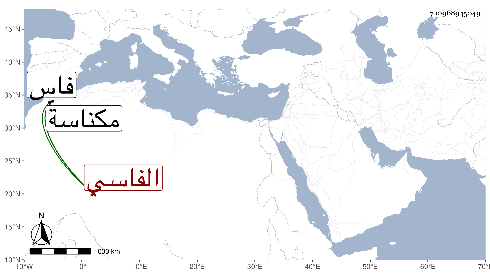

0902Sakhawi.DawLamic.ITO20230111-ara1.EIS1600.700968945049
Biography ID: 700968945049
1112
يعقوب بن عبد الله الخاقاني الفاسي . كان من أبناء البربر وتعلق بالاشتغال فلما رأى الفساد الحادث بفاس بسبب الفتنة بين السعيد وبين أبي سعيد في سنة سبع عشرة صار يأمر بالمعروف وينهى عن المنكر ويكف أيدي المفسد فتبعه جماعة وقويت شوكته بحيث حاول ملوك فاس القبض عليه فأعياهم أمره إلى أن قتل أبو سعيد وأرسل ابن الأحمر يعقوب المريني إلى فاس فلم يتم الأمر فأرسل أبا زيان بن أبي طريف بن أبي عنان فحاصر فاس ، وقد اشتدت شوكة صاحب الترجمة واستفحل أمره ففتك فيمن بقي من بني مرين وساعد أبا زيان وقام بأمره فدخل فاس وقتل عبد العزيز الكناني وعدة من أقاربه كما شرح في محله من الحوادث سنة أربع وعشرين ثم أرسل ابن الأحمر محمد بن أبي سعيد فعسكر على فاس ففر منه أبو زيان فمات ببعض الجبال وقتل هذا ثم لم يلبث أن مات محمد عن قرب فأقيم ابن أخيه عبد الرحمن فثار به أهل فاس فقتلوه وقتلوا ولده وأخاه وأقاموا رجلا من ولد أبي سعيد ، وقام بمكناسة وهي على مرحلة من فاس أبو عمر بن السعيد وقام بتازة وهي على مرحلة ونصف من فاس آخر من ولد السعيد أيضا فصار في مسافة مرحلتين ثلاثة ملوك ليس بأيديهم من المال إلا ما يؤخذ ظلما فتلاشى الحال وخربت الديار وقتلت الرجال والحكم لله . ذكره شيخنا في إنبائه نقلا عن خط المقريزي فيما نقله عن من يثق به من المغاربة القادمين للحج فالله أعلم .
